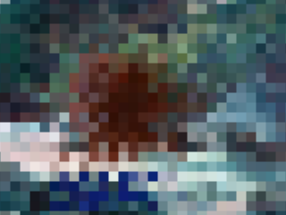
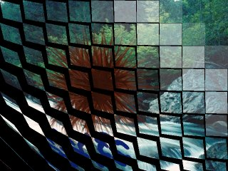
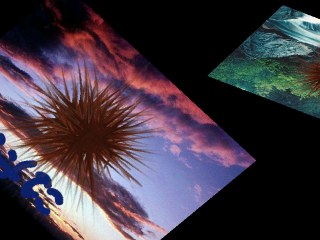
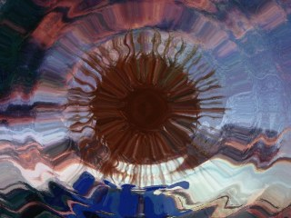

拡張トランジションプラグイン ( extrans.dll ) は 吉里吉里２用のプラグインで、本体に内蔵されていないようなトランジションをいくつか使用可能にする物です。
使用可能にするには、他のプラグインと同じく、Plugins.link メソッドで接続する必要があります ( KAG の場合は loadplugin タグ )。接続されるだけで以下のトランジションハンドラが使用可能になります。
使用可能にするには、他のプラグインと同じく、Plugins.link メソッドで接続する必要があります ( KAG の場合は loadplugin タグ )。接続されるだけで以下のトランジションハンドラが使用可能になります。
- wave
- "wave" (波) トランジションは、ラスタスクロールによる波を表現し、切り替えるトランジションです。

以下のオプションがあります。
- time (必須)
- トランジションを行っている時間をミリ秒単位で指定します。
- wavetype
- 波の動きを指定します。0 を指定するとトランジションの最初と最後で波が細かく、中程で波がおおらかになります。1 を指定すると最初に波が細かく、だんだんおおらかになります。2 を指定すると最初は波がおおらかで、徐々に細かくなります。デフォルトは 0 です。
- maxh
- 波の横幅の最大値をピクセル単位で指定します。値を大きくすると波の刻みが深くなります。デフォルトは 50 です。
- maxomega
- 波の角速度 ( rad/pixel ) の最大値を指定します。値を大きくすると波が細かくなります。小さくすると波がおおらかになります。デフォルトは 0.2 です。
- bgcolor1
- 初期背景色を 0xRRGGBB 形式で指定します。
- bgcolor2
- 最終背景色を 0xRRGGBB 形式で指定します。背景色は、初期背景色から始まり、徐々に最終背景色に変わっていきます。
- mosaic
- "mosaic" (モザイク) トランジションは、矩形のモザイクがかかったような表現をするトランジションです。

以下のオプションがあります。
- time (必須)
- トランジションを行っている時間をミリ秒単位で指定します。
- maxsize
- モザイクの矩形の大きさの最大値を指定します。デフォルトは 30 です。値を大きくするとモザイクが荒くなります。
- turn
- "turn" トランジションは、小さなカードがいくつもくるりとひっくり返るような表現をするトランジションです。

以下のオプションがあります。
- time (必須)
- トランジションを行っている時間をミリ秒単位で指定します。
- bgcolor
- 背景色を 0xRRGGBB 形式で指定します。
- rotatezoom
- "rotatezoom" トランジションは、トランジション元 ( KAG における裏画面 ) を回転させながらズームインあるいはズームアウトさせるトランジションです。
以下のオプションがあります。
- time (必須)
- トランジションを行っている時間をミリ秒単位で指定します。
- factor
- 初期拡大率を指定します。0 を指定すると最初は見えません。中央から回転しながらズームインします。2 を指定すると２倍の拡大率から徐々に等倍まで回転しながらズームアウトします。3 以上の数や実数も指定できます。デフォルトは 1 (等倍) になっています。
- accel
- 拡大縮小の動作を、加速度的に行うかどうかを指定します。-2 以下の負の数を指定すると、最初が早く、徐々に遅くなります。2 以上の正の数を指定すると、最初は遅く、徐々に早くなります。0 を指定すると直線的な動きになります。しかし視覚効果で直線的には見えないかも知れません。デフォルトは 0 です。
- twist
- どちらの方向にどれだけ回転するかを指定します。正の数を指定すると、反時計回りに回転します。負の数を指定すると時計回りに回転します。指定する値は回転数です。デフォルトは 2 です。
- twistaccel
- 回転の動作を、加速度的に行うかどうかを指定します。-2 以下の負の数を指定すると、最初が早く、徐々に遅くなります。2 以上の正の数を指定すると、最初は遅く、徐々に早くなります。0 を指定すると直線的な動きになります。デフォルトは -2 です。
- rotatevanish
- "rotatevanish" トランジションは、トランジション先 ( KAG における表画面 ) を回転させながらズームアウトさせるトランジションです。
以下のオプションがあります。
- time (必須)
- トランジションを行っている時間をミリ秒単位で指定します。
- accel
- 拡大縮小の動作を、加速度的に行うかどうかを指定します。-2 以下の負の数を指定すると、最初が早く、徐々に遅くなります。2 以上の正の数を指定すると、最初は遅く、徐々に早くなります。0 を指定すると直線的な動きになります。しかし視覚効果で直線的には見えないかも知れません。デフォルトは 2 です。
- twist
- どちらの方向にどれだけ回転するかを指定します。正の数を指定すると、反時計回りに回転します。負の数を指定すると時計回りに回転します。指定する値は回転数です。デフォルトは 2 です。
- twistaccel
- 回転の動作を、加速度的に行うかどうかを指定します。-2 以下の負の数を指定すると、最初が早く、徐々に遅くなります。2 以上の正の数を指定すると、最初は遅く、徐々に早くなります。0 を指定すると直線的な動きになります。デフォルトは 2 です。
- rotateswap
- "rotateswap" トランジションは、トランジション先とトランジション元を回転させながら入れ替えるトランジションです。トランジション先 ( KAG における表画面 ) は回転しながら奥に行き、そのかわりトランジション元 ( KAG における裏画面 ) が回転しながら手前に来ます。

以下のオプションがあります。
- time (必須)
- トランジションを行っている時間をミリ秒単位で指定します。
- twist
- どちらの方向にどれだけ回転するかを指定します。正の数を指定すると、反時計回りに回転します。負の数を指定すると時計回りに回転します。指定する値は回転数です。デフォルトは 1 です。
- bgcolor
- 背景色を 0xRRGGBB 形式で指定します。
- ripple
- "ripple" トランジションは、波紋が広がっていくような表現を行いながら入れ替えるトランジションです。

以下のオプションがあります。
- time (必須)
- トランジションを行っている時間をミリ秒単位で指定します。
- centerx
- 波紋の中心 X 座標を指定します。省略すると画像の中央になります。
- centery
- 波紋の中心 Y 座標を指定します。省略すると画像の中央になります。
- rwidth
- 波紋の細かさを指定します。16, 32, 64, 128 のいずれかを指定することができ、数値が小さければ小さいほど細かい波紋になります。省略すると 128 が指定されたと見なされます。
- roundness
- 波紋が縦に長い楕円になるか、真円になるか、横に長い楕円になるかを指定します。0.0 〜 1.0 (ただし 0.0 は含まず) の範囲の数値を指定すると ( たとえば 0.5 など )、縦に長い楕円になります。1.0 を指定すると真円になります。1.0 よりも大きい数値を指定すると (たとえば 2 など )、横に長い楕円になります。省略すると 1.0 が指定されたと見なされます。
- speed
- 波の広がる速度を指定します。省略すると 6.0 が指定されたと見なされます。
- maxdrift
- 波の激しさを指定します。省略すると 24 が指定されたと見なされます。
Noteripple トランジションは、初めて実行するときに、かなり大きなメモリを割り当てて ( 0.5〜4MB ほどでオプションによって異なります ) 、 なめらかにトランジションを実行するための数値計算をあらかじめ完了させ、そのメモリに格納しておきます。 これには少し時間 ( 0.01秒〜0.5秒ほど ) がかかる場合があります。
トランジションを行う画像のサイズ、centerx, centery, rwidth, roundness, maxdrift の各条件がすべて同じならば、前回の 数値計算の情報を再利用します。過去４つまでの条件に対する数値計算の結果が保持されています ( キャッシュされています )。 それ以上の新たな条件に対する数値計算が要求された場合は、一番古い情報から削除されていきます。
これらをふまえ、このトランジションを良く使う場合は、実行前にダミーで一回トランジションを実行しておくと、以降の 数値計算を避けることができます。